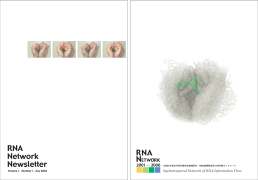
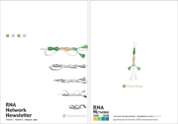
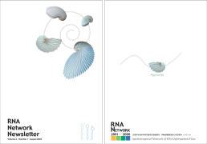
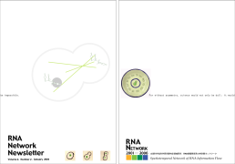
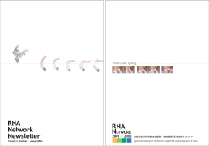
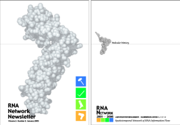
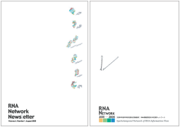
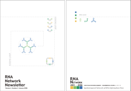
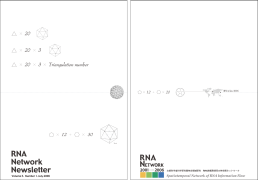
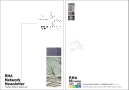

RNA News Letter
「RNA Network Newsletter」について
この広報誌は、特定領域研究「RNA情報発現系の時空間ネットワーク」（2001-2006年度）において、研究者間の情報交換を超えた社会とのコミュニケーションを目指して毎年発行されていたものです。多くの愛読者がいたものの、特定領域の研究期間の終了に伴って領域ホームページが閉鎖され、過去の記事が入手できない状態が続いていました。しかしながらその素晴らしい内容はこのまま忘れ去られるには余りにも惜しいという声も強く、このたび、領域代表中村義一先生、坂本博先生、塩見春彦先生のご協力により、バックナンバーを本領域のホームページで公開できることになりました。RNA研究に関わる研究者の素顔が透けて見えるような記事が満載。ぜひご覧下さい。
- Volume 1, Number 1 (8.0MB, PDF)
- Volume 1, Number 2 (8.6MB, PDF)
- Volume 2, Number 1 (4.7MB, PDF)
- Volume 2, Number 2 (8.2MB, PDF)
- Volume 3, Number 1 (4.8MB, PDF)
- Volume 3, Number 2 (21.3MB, PDF)
- Volume 4, Number 1 (3.55MB, PDF)
- Volume 4, Number 2 (25.2MB, PDF)
- Volume 5, Number 1 (35.7MB, PDF)
- Volume 5, Number 2 (7.7MB, PDF)
全てPDF形式になります
(2010年1月22日より公開致しました)

Vol. 1, Num. 1Table of Contents
{kind=link}

Vol. 1, Num. 2Table of Contents
{kind=link}

Vol. 2, Num. 1Table of Contents
{kind=link}

Vol. 2, Num. 2Table of Contents
{kind=link}

Vol. 3, Num. 1Table of Contents
{kind=link}

Vol. 3, Num. 2Table of Contents
{kind=link}

Vol. 4, Num. 1Table of Contents
{kind=link}
Table of Contents

Vol. 4, Num. 2Table of Contents
{kind=link}

Vol. 5, Num. 1Table of Contents
{kind=link}

Vol. 5, Num. 2Table of Contents
{kind=link}
[ ↑PAGE TOP ]